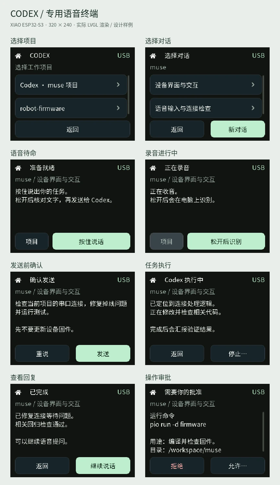

Muse
一个按住说话的触摸屏终端：电脑本机用 Whisper 语音识别模型转写，我在屏幕上核对文字后，才提交给选定的 Codex 编程会话，回复再送回屏幕。一次语音只对应一次确定的提交，断线、重连、重启都不会重复执行。

- 做什么
- 用语音给电脑上的 Codex 会话派任务，在小屏上看回复、回答选择题、处理审批
- 我做的
- 个人项目：硬件接线、ESP32 触摸固件、电脑端 Agent、本地语音识别、USB 与无线连接
- 技术栈
- ESP32-S3 · LVGL · faster-whisper · Codex App Server · TLS WebSocket
- 硬件
- XIAO ESP32S3 Plus、2.8 寸 ILI9341 屏（XPT2046 电阻触摸）、INMP441 数字麦克风
- 难点与解决
- 打开项目时，默认的会话列表扫描 15 秒内没跑完，等待期间串口缓冲写满、设备掉线。改为只查状态库（实机 4.5–5.3 ms），并把 USB 收包和业务处理拆成两个任务。
- 目前进展
- USB 和局域网下的语音往返已实测；手机热点能联网，热点下的语音往返还没验收。
方法一览
| 名称 | 怎么工作 | 输入 / 条件 |
|---|---|---|
| LVGL | 嵌入式图形库，在 ESP32 上绘制按钮、列表和文本，处理触摸按下、松开事件 | 320×240 SPI 屏，电阻触摸需先做四点校准 |
| I²S 麦克风采集 | I²S 是数字音频串行总线；INMP441 输出 32 位样本，固件转成 16 kHz、16 位单声道 PCM（未压缩的原始采样） | 按住才开采集，单次 0.5–30 秒 |
| TLS WebSocket | WebSocket 是在一条 HTTP 连接上建立的双向消息通道；TLS 负责加密并验证服务器证书 | 设备内置本机私有 CA（证书颁发机构）证书和配对令牌 |
| Tailscale Funnel | 把公网 HTTPS 请求转发到电脑上的一个回环端口，电脑不需要公网 IP 或路由器端口映射 | 电脑运行 Tailscale；设备只需能上网 |
| VAD | 语音活动检测（Voice Activity Detection），先切掉没有人声的片段，减少解码量和静音段的误识别 | 16 kHz PCM |
| faster-whisper | Whisper 语音识别模型的高效推理实现；本项目用 small 模型，GPU 上 FP16（16 位浮点），CPU 上 INT8（8 位整数量化） | GPU 需 cuBLAS 12、cuDNN 9；失败时回退 CPU |
| 束搜索（beam search） | 解码时每一步保留得分最高的 N 条候选文本（N 即 beam size）；N = 1 等于每步只取最优的贪心解码 | 默认 1，可配置 1–5 |
| Codex App Server | Codex 的本机服务进程，Agent 通过标准输入输出与它交换消息：列出会话、提交输入、接收流式回复和审批请求 | 电脑上已登录的 Codex CLI；不监听网络端口 |
| SQLite 任务账本 | 把每次提交的预览标识、任务标识和状态写入本机数据库，重连或重启后据此恢复，不重复提交 | 电脑本地文件 |
触摸界面与确认
原型由 XIAO ESP32S3 Plus、2.8 寸触摸屏和 INMP441 数字麦克风组成。项目和会话列表从电脑读取。按住录音、松开识别，屏幕先显示转写文字，点“发送”后才提交给选定的会话。同一块屏还能滑动阅读回复、回答选择题、批准电脑端的操作请求。


回复最多每 80 ms 向设备推送一次，首段立即发送；设备约每 33 ms 处理一次界面状态，没变化的标签不重绘 SPI 屏幕。审批详情超过 18 KB 时不截断后让设备批准，直接拒绝并提示到电脑处理。
本地识别与耗时
设备边录边把 PCM 流传到电脑，松开后识别。音频只留在内存里，不调用任何语音云服务。模型在服务启动后后台预加载并常驻，加载与识别共用一把互斥锁。
- 音频16 kHz PCM 流送到电脑
- 转写VAD 去静音，Whisper 解码，失败回退 CPU
- 预览文字回到屏幕，确认后提交
- beam 5，冷启动含加载
- 1942
- beam 5，热机
- 158
- beam 1，预加载后首次
- 338
- beam 1，热机
- 116
冷启动的 1942 ms 里大部分是模型加载。改为后台预加载（667 ms，在用户说话前完成）并把默认 beam 从 5 降到 1 后，热机识别从 158 / 144 ms 降到 116 / 117 ms，快 19–27%。这些数字不含无线往返和 Codex 响应。
| 后端 | 首次（含模型加载） | 热机 |
|---|---|---|
| CPU，INT8 | 3514 ms | 1292 ms |
| GPU，FP16 | 961 ms | 90 ms |
热机下 GPU 比 CPU 快约 14 倍，所以默认优先 GPU；显卡库缺失、初始化或推理时报错，就用 CPU 重跑同一段输入，转写结果仍能返回，只是更慢。
一次语音，一次提交
语音终端的主要风险是“说了一句，执行了两次”，或者确认落到了别的会话上。一次语音从头到尾绑在同一个请求上：
- 录音开始锁定项目与会话
- 生成预览带唯一标识，五分钟过期
- 确认到达校验预览标识与状态后提交
- 写账本任务标识写入 SQLite
| 情况 | 处理 |
|---|---|
| 同一确认重复到达 | 只提交一次 |
| 确认超过五分钟或已取消 | 拒绝，不能重放 |
| 录音中断线 | 取消这次录音 |
| 任务运行中断线 | 任务继续跑；设备重连后恢复状态，不重新提交 |
| USB 与 Wi-Fi 之间切换 | 保留预览和任务，只提交一次 |
| 电脑端程序重启 | 未完成的任务标为 unknown，不自动重试 |
| 审批请求被重放 | 拒绝 |
Codex 通过本机 App Server 运行，不暴露到网络上，只能选择配置里登记过的项目，并使用 Codex 自身的审批机制。账号凭据留在电脑上，设备只持有自己的配对令牌。
打开项目时的卡顿
实机联调时，点开一个项目要等很久才出对话列表，有时还会退回项目列表。原因是两件事叠在一起：
- 列表查询太慢。默认的会话列表查询会扫描全部历史记录文件，15 秒内没有完成。改为只查 Codex 的状态数据库；同时给列表请求设 10 秒上限，超时保留连接并提示重试。
- 等待时没人收包。USB 收包和业务处理原在同一个流程里，等 Codex 的这段时间设备发来的屏幕状态没人读，串口缓冲写满就会丢帧、触发重连。拆成两个独立任务后，业务队列限定容量，断开时取消还在等的处理。
| 指标 | 修复前 | 修复后 |
|---|---|---|
| 会话列表查询 | 15 s 内未完成 | 4.5 / 5.3 / 5.3 ms |
| 本机对照查询（只查状态库） | — | 约 2 ms |
| 设备显示的对话数 | — | 9 |
| 随后 15 秒内收到的屏幕状态 | — | 7 次 |
| USB 会话数（1 表示没有重连） | — | 1 |
USB、局域网与热点
同一个电脑端程序同时接 USB 和无线，共用会话、预览和任务账本。设备优先用已建立的 USB 数据会话，没有 USB 时走 Wi-Fi；无线端点依次尝试局域网和 Funnel，连上后不会为了试别的端点打断任务。
| 方式 | 数据路径 | 认证与加密 | 实测 |
|---|---|---|---|
| USB | 设备 → USB 串口 → 电脑 | 物理连接；首次写入 Wi-Fi、端点和 CA 也走这条 | 语音往返通过 |
| 局域网 | 设备 → 路由器 → 电脑的 TLS WebSocket 端口 | 本机私有 CA，校验证书和主机名，持配对令牌 | 语音往返通过 |
| 手机热点 | 设备 → 热点 → 互联网 → Tailscale Funnel → 电脑回环端口 | Funnel 用公开可信证书，同样校验主机名并持令牌；ESP32 本身不跑 Tailscale | 联网和项目同步通过；语音往返未验收 |
| 请求 | HTTP 状态 | 含义 |
|---|---|---|
| 健康检查 | 200 | 服务在线 |
| 不带令牌的 WebSocket | 401 | 拒绝未认证请求 |
| 正确令牌，但同一设备已在局域网在线 | 409 | 拒绝重复连接 |
| 设备经 Funnel 连接 | 101 | 升级为 WebSocket，同步项目成功 |
Wi-Fi 也能在屏幕上扫描、添加和切换：新网络先试连，并验证能完成到电脑端点的认证握手，成功后才保存；网络不可达时最长约 41 秒退回原网络（实测 40.97 秒，保存列表未变）。另可用手机蓝牙配网，配网码每次随机生成，两分钟后自动关闭。
实机验证
| 场景 | 录音 | 结果 |
|---|---|---|
| USB | 42496 样本（2.656 s） | 识别、手动发送、Codex 完成，设备显示回复 |
| 局域网，无 USB 数据会话 | — | 经 TLS WebSocket 连接电脑并同步项目列表 |
| 局域网 Wi-Fi | — | 屏幕录音、发送并收到 Codex 回复 |
| 手机热点 + Funnel | — | 拔掉 USB 后持续上报状态，重启后自动连回热点；语音往返未验收 |
第一次实录时数字增益设为 4 倍，约 18% 的样本削波（超出 16 位范围被截平），已改为 1 倍。软件侧有 68 项 Python 与固件回归测试，覆盖确认前不提交、重复提交、过期确认、断线不重放、GPU 失败回退 CPU 等情况；LVGL 的按住、松开和故障取消事件在实际界面代码上测试。
局限与下一步
- 热点语音往返未验收。热点下设备已能联网并同步项目，完整的录音、发送、收回复还没单独确认。
- 识别准确率只看过少量样本。噪声、说话距离、连续多轮和英文技术名词的准确率要用真实录音系统地测。
- 桌面会话共享。不建议桌面和设备同时写同一个会话；打开已有会话时只读最近 5 轮，展示最新一条有文字的回复。
- 硬件还很原型。背光直接接 3.3 V 常亮，固件只能经 USB 更新，没有 OTA（无线升级）；没有电池管理，靠充电宝供电，暂不给续航指标。